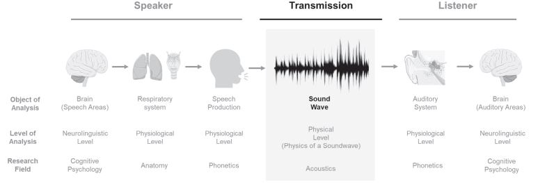

Theoretical Foundations
Voice analytics is a multidisciplinary exploration of human speech, seamlessly integrating phonetics, acoustics, and cognitive psychology. This cutting-edge field unravels the intricacies of speech formation, transmission, and perception, offering profound insights into human communication.
Before diving into the world of voice analytics, it’s essential to grasp the fundamental principles of acoustics. While acoustics is a vast field, we’ll cover some key concepts to provide a foundational understanding of this fascinating domain. These insights will not only enhance your comprehension of voice analytics but also empower you to better interpret your analysis results.
Fundamental Principles of Acoustics
Sound as Wave in Motion
Sound, at its core, is a wave in motion. These sound waves travel through various elastic media, including air, steel, and water, inducing changes in pressure and motion. Elastic media have the remarkable ability to reshape themselves when subjected to external forces.
Sound as a longitudinal Wave
Waves can be classified based on the orientation of their motion, giving rise to three fundamental types: transverse, longitudinal, and surface waves. In the case of an ideal fluid medium like air and other gases, sound propagates as longitudinal waves. These are waves in which particles oscillate parallel to the direction of the wave’s propagation.
Complex Periodic Sounds
The human voice exhibits two distinctive features: periodicity, which involves the consistent repetition of sound patterns, and complexity, marked by the presence of numerous signal components known as harmonic frequencies. Periodicity pertains to the regular recurrence of sound patterns, while complexity highlights the existence of these multiple harmonic frequencies.
Harmonics and Frequency
Harmonics are multiples of the fundamental frequency and contribute to the richness and quality of a sound. Frequency measures the number of oscillations occurring per second and is quantified in hertz (Hz), while amplitude denotes the power or loudness of a sound, measured in decibels (dB). Humans can typically hear sounds ranging from 0 to 140 dB, with 0 dB representing the hearing threshold for the human ear. Jitter and shimmer measurements capture frequency and amplitude instability, respectively, making them valuable tools in describing vocal characteristics, speaker evaluation, stress and emotion classification, and vocal pathology detection.
Delving into the Mechanics of Human Speech
As previously said, voice is nothing else than a complex periodic sound. However, it involves a complex series of events. Imagine uttering a simple greeting like “Hello” to a friend. To do so, your brain initiates the release of air from your lungs, causing your vocal folds to vibrate. The distinctive sound of your “Hello” is a product of the precise configuration of your articulatory organs, including your teeth, tongue, oral and nasal cavities. These unique vocal signatures are influenced by factors such as gender and body size.
For instance, women typically have higher-pitched voices due to shorter vocal fold lengths, while larger individuals may possess lower-pitched voices due to longer vocal tracts. These vocal variations carry evolutionary implications, shaping perceptions of attractiveness, dominance, and social status.

Recording Sound Waves
Sound waves can be captured and recorded, resulting in an audio signal. During the recording process, audio is converted from its analog form, where it exists as continuous or semi-continuous changes in the signal, into digital format. This conversion is essential for saving audio as digital files. Digital audio quality is determined by the sample rate, which defines the number of “snapshot slices” taken per second of the analog signal.
Analog vs. Digital Signals
Analog signals continuously represent the signal’s magnitude, while digital signals present the magnitude only in fixed time intervals, resulting in a discrete representation. Analog signals appear as continuous graphs, whereas digital signals manifest as a step-like, stair-stepped graph.
Signal Analysis
Signals are essentially sets of meaningful values arranged in a particular sequence. These values can be assessed from various perspectives, and this is where voice analytics comes into play.
The Four-Dimensional Framework of Speech
Each and every signal can be completely described according to four distinct dimensions: (1) time, (2) amplitude, (3) frequency and (4) spectrum. These dimensions, when combined with listener perceptions, provide valuable insights into a speaker’s emotional state and personality traits. Understanding these dimensions enhances our grasp of human speech and the psychology behind it. Below we provide a concise overview of the different dimensions, readers interested in a more detailed overview, we recommend reading Voice analytics in business research: Conceptual foundations, acoustic feature extraction, and applications.
Time: The Rhythm of Speech
The initial dimension, time, quantifies the duration of soundwaves, typically measured in seconds or milliseconds. This dimension encompasses various vocal attributes, such as speech and articulation rates (indicating speaking speed) and the percentage of unvoiced frames (reflecting pauses in speech). These features have been correlated with different personality traits and emotional states. Notably, a faster speech rate is often associated with a heightened perception of extraversion.
Amplitude: Volume Control
The second dimension assesses the intensity of the sound wave, expressed as power per unit area and commonly quantified in decibels (dB). Amplitude directly influences the perceived loudness of a sound, with higher values indicating greater volume. Perceived loudness is also associated with various personality traits and emotional states. For instance, voices with higher amplitudes, relative to a baseline, tend to be perceived as more dominant, assertive, and extroverted.
Frequency: the Musical Language of Emotions
The third dimension focuses on the frequency of a soundwave, typically measured in Hertz (Hz), representing the number of cycles per second of vibrating air particles. The human auditory range spans from 20 Hz to 20 KHz. Within the human voice, various frequencies are present, with the fundamental frequency (F0) being the most prominent, defining the perceived pitch (ranging from low to high). Like other dimensions, pitch is linked to multiple personality traits and emotional states. For instance, higher perceived pitch is associated with perceptions of greater competence, trustworthiness, or empathy. Notably, pitch strongly correlates with biological sex, as women typically exhibit higher pitches (ranging from 150 to 350 Hz) compared to men (ranging from 85 to 200 Hz).
Spectrum: The Art of Vocal Patterns
The fourth dimension delves into the perturbations within a soundwave. These perturbations are quantifiable through spectral features that gauge the degree of irregularity or periodicity in a soundwave, essentially measuring “vocal instability.” Noteworthy spectral features include shimmer (which quantifies variations in loudness), jitter (which assesses pitch fluctuations), and Harmonics-to-Noise Ratio (HNR, indicating additive noise in a signal). Once again, these measures correlate with various perceived personality traits and emotional states. For example, increased shimmer and jitter are linked to heightened stress or anger.
A Four-Dimensional Conceptual Framework of Speech: Linking Vocal Features to Speaker States and Traits
| SOUNDWAVE DOMAIN | PRIMARY VOCAL FEATURES (EXAMPLE METRIC) | LISTENER PERCEPTION | INFERRED STATES AND TRAITS BASED ON EXPRESSED SPEECH | SELECTED RESEARCH |
|---|---|---|---|---|
| Time | Duration (Milli-/Seconds) | Duration of an Utterance | Anger↑, Fear↑, Sorrow↑ | Williams & Stevens, 1972 |
| Speech and Articulation Rate (Words per Second) | Velocity of Speech | Anger↑, Competence ↑, Contemplation↓, Dominance↓, Enthusiasm↑, Extraversion↑, Fear↑, Happiness↑, Persuasiveness↑, Sadness↓, Stress↑, Tenderness↓ | Brenner, Doherty, & Shipp, 1994; Dasgupta, 2017; Juslin & Laukka, 2003; MacLachlan, 1982; Miller et al., 1976; Mohammadi & Vinciarelli, 2015; Scherer & Giles, 1979; Tusing & Dillard, 2000; Williams & Stevens, 1972 | |
| Voice breaks (Percentage Unvoiced Frames) | Number and Duration of Pauses | Competence↓, Contemplation↑, Extraversion↓ | Dasgupta, 2017; Mallory & Miller, 1958; Mohammadi & Vinciarelli, 2015; Scherer & Giles, 1979 | |
| Amplitude | Intensity / Power (Sone) | Loudness of Speech | Aggression↑, Anger↑, Annoyance↑, Dominance↑, Extraversion↑, Fear↓, Happiness↑, Tenderness↓, Sadness↓, Shyness↓, Stress↑ | Abelin & Allwood, 2000; Brenner et al., 1994; Johnstone & Scherer, 1999; Juslin & Laukka, 2003; Mallory & Miller, 1958; Scherer, 2003; Scherer & Giles, 1979; Tusing & Dillard, 2000 |
| Variability of Intensity / Power (Sone Variance) | Loudness Variability | Anger↑, Dominance↑, Fear↑, Happiness↑, Sadness↓, Tenderness↓ | Juslin & Laukka, 2003; Tusing & Dillard, 2000 | |
| Frequency | Fundamental Frequency (Hertz) | Pitch | Anger↑, Competence↓, Confidence↓, Empathy↓, Extraversion↑, Fear↑, Happiness↑, Nervousness↑, Persuasiveness↓, Sadness↓, Stress↑, Tenderness↓, Trustworthiness↓ | Apple et al., 1979; Brenner et al., 1994; Guyer et al., 2019; Juslin & Laukka, 2003; Oleszkiewicz et al., 2017; Scherer & Giles, 1979; Williams & Stevens, 1972 |
| Variability of Fundamental Frequency (Hertz Variance) | Pitch Variability | Anger↑, Extraversion↑, Happiness↑, Sadness↓, Shyness↓, Sociability↑, Tenderness↓ | Abelin & Allwood, 2000; Burgoon, Birk, & Pfau, 1990; Juslin & Laukka, 2003; Ray, 1986; Scherer & Giles, 1979 | |
| Spectral | Vocal Shimmer (cycle to cycle deviation from mean amplitude) | Loudness Perturbations | Anger↑, Confidence↑, Joy↓, Stress↑ | Jacob, 2016; Jiang & Pell, 2017; Li et al., 2007 |
| Vocal Jitter (mean absolute difference between consecutive μs periods) | Pitch Perturbations | Anger↑, Annoyance↑, Happiness↑, Sadness↓, Stress↑ | Johnstone & Scherer, 1999; Juslin & Laukka, 2003; Li et al., 2007 | |
| HNR (additive noise in signal in dB) | Voice Quality | Confidence↑, Happiness↑, Interest↑, Lust↓, Pleasure↑ | Jiang & Pell, 2017; Kamiloglu ˘ et al., 2020 | |
| Vocal Entropy (Shannon evenness of frequency spectrum) | Diversity of Vocal Transitions | Low mood↑ | Yingthawornsuk, 2016 |
R for Voice Analytics
At the Voice Analytics Hub, our tool of preference for voice analytics is R and, thus, all the tutorials and tools we provide focus on this language.
Why R?
R is a versatile and powerful programming language and environment for statistical computing and data analysis, making it a valuable tool for sound analytics in several ways:
Open Source: R is open-source software, which means it’s freely available to anyone. This accessibility encourages collaboration, allows for continual improvement, and reduces costs associated with proprietary software.
Rich Ecosystem: R boasts a vast ecosystem of packages and libraries specifically designed for various data analysis tasks, including sound analytics. These packages provide functions and tools that streamline data processing, statistical analysis, and visualization, saving time and effort.
Statistical Capabilities: R is renowned for its statistical capabilities, making it an ideal choice for analyzing sound data. Researchers can apply a wide range of statistical tests and models to explore patterns, trends, and relationships within sound datasets.
Data Visualization: R excels at data visualization. It offers numerous packages (e.g., ggplot2) for creating publication-quality plots and visualizations, allowing researchers to effectively communicate their findings. Newspapers like The Economist or The Washington Post usually use R to create their nice looking plots.
Flexibility: R’s flexibility enables users to adapt it to their specific needs. Researchers can write custom functions and scripts tailored to their sound analytics tasks, offering greater control and customization.
Community Support: R has a large and active user community, which means that help is readily available through forums, mailing lists, and online resources. This support network can be invaluable when encountering challenges during sound analytics projects.
Integration: R can seamlessly integrate with other programming languages and tools, facilitating the incorporation of sound analytics into broader data analysis workflows. For example, R can be used in conjunction with Python for machine learning tasks.
Reproducibility: R’s script-based approach ensures that analyses are fully documented and reproducible. This is essential for maintaining transparency and rigor in sound analytics research.
Cross-Platform Compatibility: R is available for multiple operating systems, including Windows, macOS, and Linux, ensuring compatibility with various computing environments.
Community Contributions: The R community actively develops and contributes new packages and functionalities. This means that the toolset for sound analytics in R is continually evolving and expanding.
In summary, R’s open-source nature, statistical prowess, data visualization capabilities, flexibility, and strong community support make it a compelling choice for sound analytics. Researchers can leverage R’s extensive ecosystem to effectively analyze, visualize, and draw insights from sound data for a wide range of applications, including speech analysis, audio processing, and more.